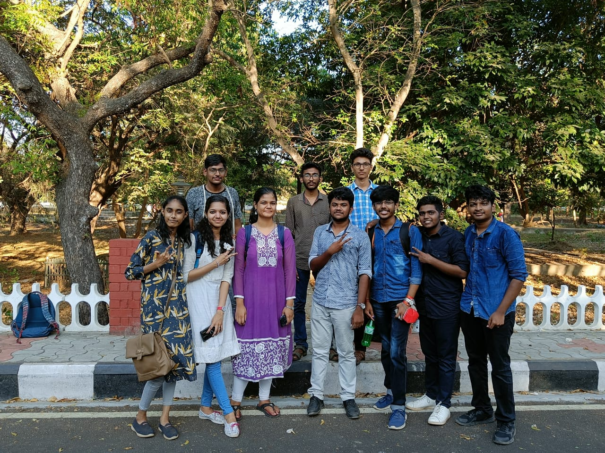

██▀███ ▄▄▄ ▒██ ██▒▓█████ ███▄ █
▓██ ▒ ██▒▒████▄ ▒▒ █ █ ▒░▓█ ▀ ██ ▀█ █
▓██ ░▄█ ▒▒██ ▀█▄ ░░ █ ░▒███ ▓██ ▀█ ██▒
▒██▀▀█▄ ░██▄▄▄▄██ ░ █ █ ▒ ▒▓█ ▄ ▓██▒ ▐▌██▒
░██▓ ▒██▒ ▓█ ▓██▒▒██▒ ▒██▒░▒████▒▒██░ ▓██░
░ ▒▓ ░▒▓░ ▒▒ ▓▒█░▒▒ ░ ░▓ ░░░ ▒░ ░░ ▒░ ▒ ▒
░▒ ░ ▒░ ▒ ▒▒ ░░░ ░▒ ░ ░ ░ ░░ ░░ ░ ▒░
░░ ░ ░ ▒ ░ ░ ░ ░ ░ ░
░ ░ ░ ░ ░ ░ ░ ░
2022-06-22
Hello friend I wanted to convey my thoughts in a more deeper manner than it is allowed on any social media so i made this. Welcome into my train wreck called my mind.
To hangout with, to share common memories with. In this ever dying world. why does it matter?. Then at the end of the You are left alone on your own. I am talking about the feeling of when you surrounded by everyone you think you care about have feelings about but still feel alone. You could have 1000 friends in real life a million follower on social medias The feeling you get that you are alone even when you are surrounded by people Yes, that feeling is what i am talking about. The feeling of lonliness. Sometimes I feel like i am forever destined to be alone that i have gotten used to it. I started to enjoy my company more than company of others. I still like the company of others but get burnt out when i am with them for a long time. I need a personal time every now and then to recharge. The feeling of having no real connection with people just superficial ones. The ones that are not unique the ones everyone has to keep up with the fiscade we called socializing to live peaceful in our society not be a outcast. Some try hard to make friends Some make new friends everyday. but have no time spend quality time with all of them.

1Apsara, Anjali, Pranav Varma, Harshitha, Raxen, Karthick, Noumaan, Anirudh, Harrish, Arjun Sharath